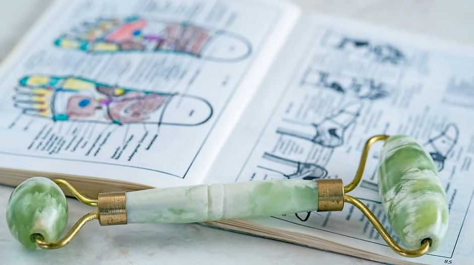

Discover reflexology
A natural approach to healing
A selection of published research exploring reflexology and its potential benefits for a range of conditions.

Grounded in the whole person
Reflexology maps points on the feet, hands and ears to areas of the body. The studies below explore how this gentle, holistic approach may support relaxation and well-being across a range of conditions.
These links are provided for general information only and are not a substitute for medical advice. Reflexology is a complementary therapy and does not claim to diagnose, treat or cure any condition.
Selected reading
Research by condition
Anxiety
View study (PubMed) →Anxiety (coronary patients)
Females with coronary problems →Arthritis
View study (PDF) →Back pain
View study (PubMed) →Fibromyalgia
View study (PubMed) →High blood pressure
Wiley Online Library →Insomnia
BMJ (abstract) →Menopause
View study (PubMed) →Premenstrual syndrome (PMS)
View study (PubMed) →Stress
View study (PubMed) →Curious whether reflexology could help you?
Get in touch and Pamela will be happy to talk through your needs.